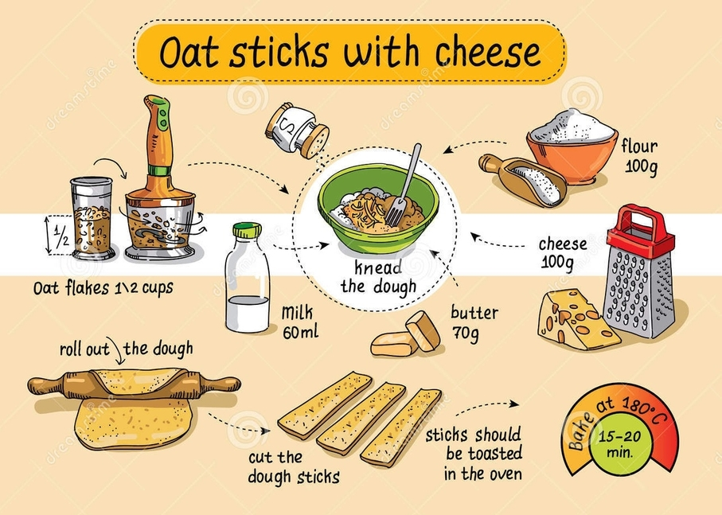
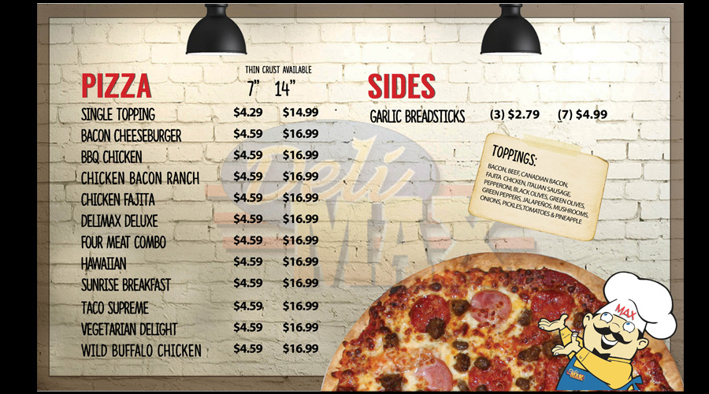

1. Імперативний код
Описує процес обчислення у вигляді заданої послідовності інструкцій, змінюють стан програми. Опис того, як щось виконує.
Імперативний стиль програмування це такий, який дає машині набір детальних
інструкцій для виконання завдання. Наприклад, цикл for, який надає точні
вказівки для ітерації за індексами масиву.
Можна провести аналогію з рецептом приготування страви. Рецепт це набір покрокових інструкцій для отримання бажаного результату.

2. Декларативний код
Описує те, що ми хочемо отримати в результаті, а не як це зробити. Порядок виконання і спосіб досягнення не важливий.
Коли ми пишемо HTML-код, то декларативно, за допомогою тегів і атрибутів, описуємо що хочемо отримати в результаті. Браузер читає цей код і сам виконує всі необхідні операції по створенню HTML-елементів і переміщенню їх на сторінку.
Можна провести аналогію з меню ресторану. Це декларативний набір можливих до замовлення страв, деталі приготування і подачі яких приховані.

Декларативний опис завдання більш наочно і легше формулюється. Ми говоримо що хочемо зробити, викликавши метод або функцію. Її реалізація швидше за все використовує імперативний код, але він прихований всередині і не ускладнює розуміння основного коду.
3. Імперативний vs декларативний
Розглянемо різницю підходів на прикладі базової операції фільтрації колекції. Напишемо код перебору і фільтрації масиву чисел по якихось критеріях.
// Імперативний підхід
const numbers = [1, 2, 3, 4, 5];
const filteredNumbers = [];
for (let i = 0; i < numbers.length; i += 1) {
if (numbers[i] > 3) {
filteredNumbers.push(numbers[i]);
}
}
console.log(filteredNumbers); // [4, 5]
Array.prototype.filter() це метод масиву який приховує в собі логіку перебору
колекції й викликає callback-функцію яку ми йому передаємо для кожного елемента,
повертаючи масив елементів підійшли під критерій.
// Декларативний підхід
const numbers = [1, 2, 3, 4, 5];
const filteredNumbers = numbers.filter(value => {
return value > 3;
});
console.log(filteredNumbers); // [4, 5]